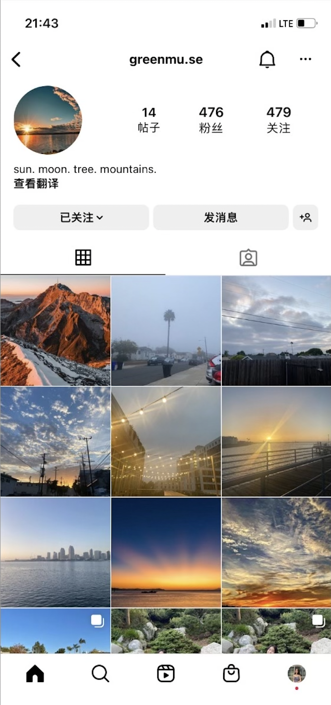

INSTAGRAM!!

One of my very few projects is this instagram account I made where I post images of beautiful scenery and people and share it to others. My target audience are people who share the same interst in capturing nature. This has reached a good amount of followers and I hope to reach more followers and maybe even meet other passionate photographers like me!